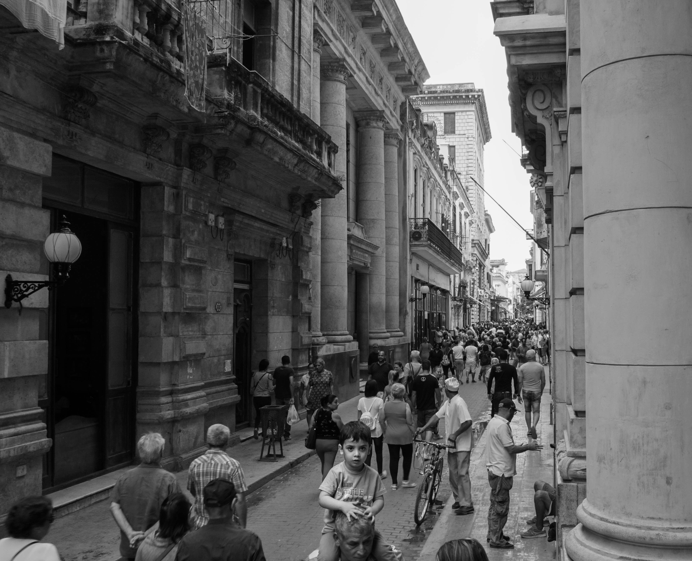

Topic
Taking photos is a long path. And it is also a recording of ourlives. Photographers use light and shadow to reflect and compose photos with their own styles. As a new student who is learning Photography, I took ART210 in the first semester. From learning a lot of other Photographers' way of taking photos, I improved a lot in my photos. And for this website, I put some of my photos during ART210 class.
The first photo is about the "Alphabet Letters" project. For this project, our professor asked us to take photos about letters from A to Z. It is easy to find letters in our life. However, when you wanted to take photos during your life, it was a hard and long way to do that. It cost me about a whole day to find all letters in UM campus. But when I went back and saw what I got, everything was worthy.
The second photo is about traveling. Our professor asked us to take some photos about our fall recess traveling. So for that fall recess, I went to Cuba with my friends. Cuba is a really nice place for taking photos, with multiple colors and its unique style. The culture and tradition there was amazing and attractive. For this photo, I found a place that can overlook the whole street. And I also found a man who was holding his child. That attracted me a lot so that I caught that funny moment on the street.
The third photo is about the refection. For this project, our professor asked us to imitate a photographer that we like. So I just imitated a photographer who takes the reflection photos. The meaning of reflection photos is that photographer taking photos from the mirror and glasses on the street. That is a fresh concept for a beginner. But in the end, I think I did a good job for my project.